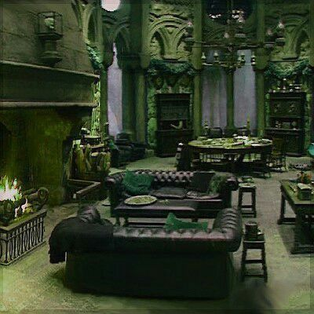

Slytherin: Das Haus der List und Tücke.
In den kalten Kerkern von Hogwarts lauert das Haus Slytherin, bekannt für seinen Ehrgeiz, seine List und
seine Verbindung zu den dunklen Künsten. Gegründet von Salazar Slytherin, ziehen Schüler mit scharfem
Verstand, resourcefulness und einem gewissen Hang zur Macht hierher.
Slytherins sind entschlossen, ihre Ziele zu erreichen, und scheuen dabei auch vor unkonventionellen Methoden
nicht zurück. Ihre Loyalität gilt in erster Linie sich selbst und ihren Verbündeten, und sie besitzen ein
ausgeprägtes Gespür für Machtverhältnisse.
Während Slytherins oft mit Misstrauen und Vorurteilen konfrontiert werden, zeigen einige von ihnen, wie
Severus Snape, dass hinter ihrer ehrgeizigen Fassade auch ein tiefer Sinn für Ehre und Loyalität verborgen
sein kann.
Der Gemeinschaftsraum der Slytherin

In den kalten Kerkern des Schlosses, umhüllt von grünem Licht und mystischer Atmosphäre, liegt der
Slytheringemeinschaftsraum. Elegante, smaragdfarbene Polster und Sessel laden zum Verweilen inmitten von
schattigen Ecken und Nischen ein. Schlangenmotive und Ahnenbilder schmücken die Wände und zeugen von
Ehrgeiz, List und Tradition. Ein Ort der Macht und der Intrigen, wo Ambitionen geschmiedet, Pläne
geschmiedet und der Weg zum Erfolg geebnet wird
Hauslehrer

Severus Snape, der mürrische und gefürchtete Professor für Zaubertränke und Hauslehrer von Slytherin in
Hogwarts, hütet ein dunkles Geheimnis. Seine tiefe Verbundenheit mit Albus Dumbledore und seine
tragische Vergangenheit prägen seine Handlungen und enthüllen ihn als komplexen und widersprüchlichen
Charakter.
Gründer

Ehrgeiziger Gründer Hogwarts. Begabter Magier (Parseltongue). Streit um Muggelstämmige führte zum Bruch.
Hinterließ dunkles Geheimnis (Kammer des Schreckens)
Hausgeist
Geist von Hogwarts, gezeichnet von tragischer Liebe und Mord. Bewacht Slytherin, einschüchternd, aber
respektiert. Geheimnisvolle Vergangenheit, verbunden mit Helena Ravenclaw.